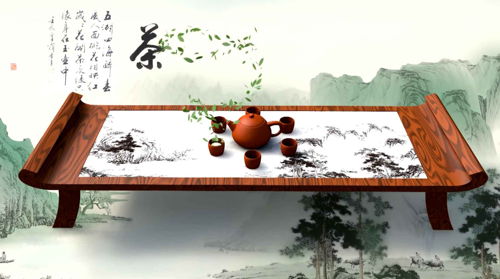

—| 茶 | 之 | 人 | 生 |—
THE LIFE OF TEA
—| 茶 | 之 | 文 | 化 |—
THE CULTURE OF TEA


—| 茶 | 之 | 经 | 典 |—
THE CLASSIC OF TEA
祁门红茶简称祁红，为工夫红茶中的珍品，国际上享有盛誉的红茶品种。产于安徽省祁门、东至、...
西湖龙井是最著名的绿茶品种，同时也是我国的第一名茶。西湖龙井茶，因产于杭州西湖山区的龙...

黄山毛峰是著名绿茶品种，产于安徽黄山。这里山高林密，日照短，云雾多，自然条件十分优越...
普洱茶主要产于云南省的西双版纳、临沧、普洱等地区。普洱茶讲究冲泡技巧和品饮艺术，其饮用...

武夷岩茶是中国传统名茶，是具有岩韵（岩骨花香）品质特征的乌龙茶。产于福建闽北“秀甲东...

都匀毛尖， 中国十大名茶之一。1956年，由毛泽东亲笔命名，又名“白毛尖”、“细毛尖”,...
铁观音茶，中国传统名茶，属于青茶类，是中国十大名茶之一。原产于福建泉州市安溪县西坪镇,...
君山银针是中国名茶之一。产于湖南岳阳洞庭湖中的君山，形细如针，故名君山银针。属于黄茶。...